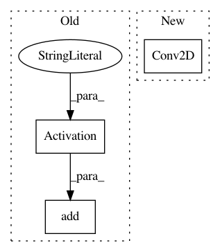

4b71f9b988edf0d5c9e69078c40a1ff62a1853ef,ccgan/ccgan.py,CCGAN,build_discriminator,#CCGAN#,92
Before Change
model.add(Conv2D(128, kernel_size=3, padding="same"))
model.add(Activation("relu"))
model.add(Conv2D(128, kernel_size=3, padding="same"))
model.add(Activation("relu"))
model.add(MaxPooling2D())
After Change
img = Input(shape=self.img_shape)
features = model(img)
validity = Conv2D(1, kernel_size=4, strides=1, padding="same")(features)
label = Flatten()(features)
label = Dense(self.num_classes+1, activation="softmax")(label)
In pattern: SUPERPATTERN
Frequency: 3
Non-data size: 3
Instances
Project Name: eriklindernoren/Keras-GAN
Commit Name: 4b71f9b988edf0d5c9e69078c40a1ff62a1853ef
Time: 2018-02-13
Author: eriklindernoren@live.se
File Name: ccgan/ccgan.py
Class Name: CCGAN
Method Name: build_discriminator
Project Name: dmlc/gluon-cv
Commit Name: 2318052dc79966bf36675606b7d992a347418292
Time: 2019-01-07
Author: cheungchih@gmail.com
File Name: gluoncv/model_zoo/nasnet.py
Class Name: BranchSeparables
Method Name: __init__
Project Name: dmlc/gluon-cv
Commit Name: 2318052dc79966bf36675606b7d992a347418292
Time: 2019-01-07
Author: cheungchih@gmail.com
File Name: gluoncv/model_zoo/nasnet.py
Class Name: BranchSeparablesReduction
Method Name: __init__